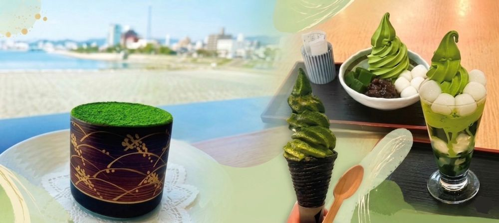

きょうも抹茶。へようこそ
抹茶スイーツ、抹茶カフェ、ケーキ屋さん、コンビニの新作レビュー、
そして抹茶の歴史まで幅広く紹介しています。
抹茶が好きな方も、これから楽しみたい方もゆっくり味わえるサイトです。
抹茶入門
更新スケジュール：
新作抹茶スイーツ
更新スケジュール：
まっちゃの旅
更新スケジュール：
おすすめの抹茶情報 を定期的に更新しています。
お知らせ
- ローソン新作抹茶スイーツ を掲載しました。
- 広島市内のカフェに行ってきました！
- 「抹茶の歴史 」を更新しました。